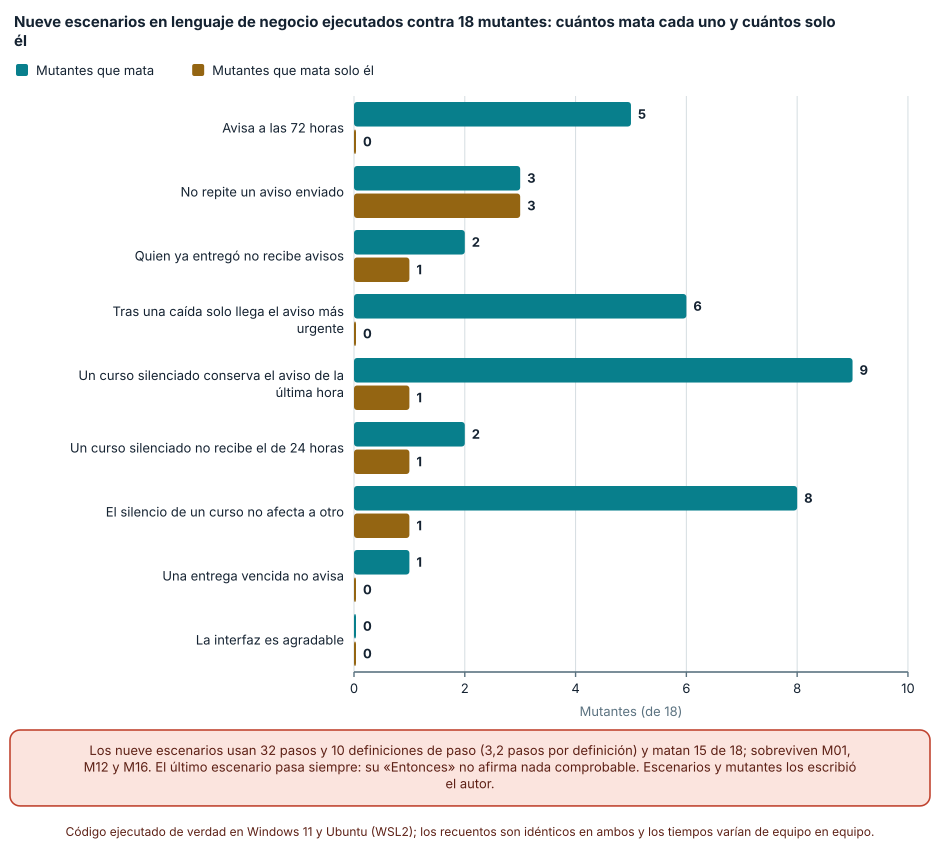
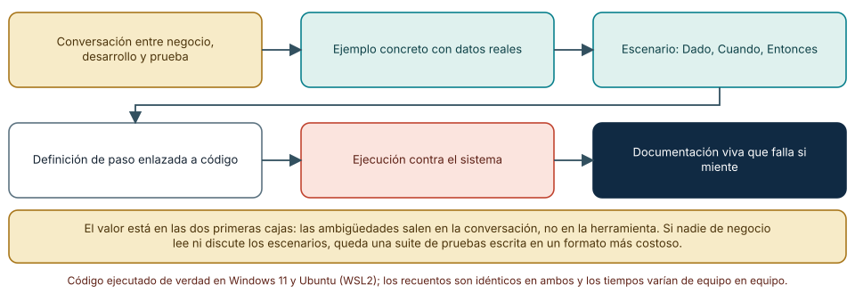
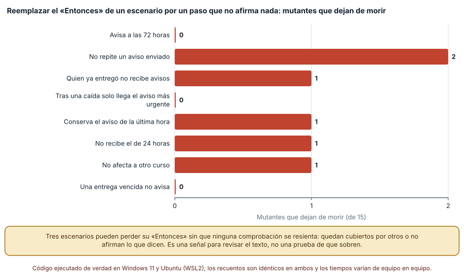

← SE-543 — TDD en la práctica: escuelas de Londres y clásica, y sus límites · ↑ Parte 45 · 📚 Índice completo · 🌐 Portal · SE-545 — ATDD y Specification by Example: aceptación ejecutable →
Punto profesional y fundamento pedagógico
Punto profesional. La clase existe para que uses BDD por lo que aporta y no por la herramienta que lo acompaña. Lo que aporta es una conversación: personas de negocio, de desarrollo y de prueba acuerdan ejemplos concretos antes de construir, y esos ejemplos se vuelven pruebas que dicen lo mismo con las mismas palabras. Lo que suele quedar de BDD en un equipo que solo adoptó la herramienta es un formato (Dado, Cuando, Entonces) con un costo de mantenimiento mayor que el de una prueba normal y sin la conversación que lo justificaba. La habilidad profesional es reconocer cuál de las dos cosas se está practicando y qué evidencia produce cada una.
Por qué aparece aquí. Sigue a TDD en la práctica porque BDD usa el ciclo de TDD como su ciclo interno y le añade un ciclo externo de acuerdo con quien conoce el negocio. La Parte 12 trató requisitos y la Parte 13 la especificación por ejemplos; aquí se ejecutan esos ejemplos y se mide qué protegen.
Error conceptual que debe corregir. Creer que BDD es escribir pruebas en Gherkin. La documentación oficial de Cucumber lo dice con claridad: BDD es una forma de trabajar que cierra la brecha entre personas de negocio y personas técnicas, y se apoya en tres prácticas, descubrimiento (explorar con ejemplos qué debería hacer el sistema), formulación (escribir esos ejemplos en un formato estructurado) y automatización (convertirlos en pruebas ejecutables). Si solo existe la tercera, se tiene un marco de pruebas con una sintaxis peculiar, no BDD.
Secuencia de aprendizaje. Antes de ejecutar, predices cuántos de los 18 defectos sembrados mata un conjunto de nueve escenarios en lenguaje de negocio y cuáles de los escenarios sobran. Después ejecutas un ejecutor de escenarios escrito con la biblioteca estándar, mides la contribución de cada escenario y reemplazas cada «Entonces» por un paso vacío para ver qué se pierde.
Evidencia de aprendizaje. bdd-log.md con una sesión de descubrimiento de ejemplos (reglas, ejemplos, preguntas abiertas), los escenarios formulados, el resultado de ejecutarlos contra los mutantes y una nota que separe qué es medido y qué es práctica de conversación que esta clase no puede medir.
Límite de la conclusión. Los nueve escenarios, los 32 pasos y los 18 mutantes los escribió el autor, y el ejecutor es un mini intérprete de unas treinta líneas, no Cucumber. La clase mide qué protegen los escenarios; no mide el valor de la conversación (que es la parte central de BDD y requiere equipos reales) ni compara BDD con otras prácticas en esfuerzo. No se invocó ningún modelo de lenguaje.
Trazabilidad fuente → afirmación
| Fuente primaria u oficial | Afirmación que respalda | Lo que no prueba |
|---|---|---|
| Cucumber, «Behaviour-Driven Development» | Define BDD como una forma de trabajar con tres prácticas (descubrimiento, formulación, automatización) y sostiene que los ejemplos documentados se vuelven un activo para cambiar el sistema con confianza. | No demuestra que los equipos que lo adoptan produzcan menos defectos. |
| Cucumber, «Gherkin Reference» | Documenta la sintaxis estructurada (escenario, pasos, tablas) usada para formular ejemplos. | No dice qué ejemplos elegir. |
| North, «Introducing BDD» | Es la presentación original de BDD como evolución de TDD centrada en el comportamiento. | No es un estudio de resultados. |
| Agile Alliance, «Three Amigos» | Recoge el término para la conversación entre negocio, desarrollo y prueba. | No mide su efecto. |
| Adzic, «Specification by Example» | Es la fuente de la práctica de especificar con ejemplos concretos acordados. | No sustituye la elección cuidadosa de ejemplos. |
| DeMillo, Lipton y Sayward | Fundamenta medir los escenarios con mutantes. | No dice que los mutantes sean defectos reales. |
Antes de empezar
Recupera lo aprendido en SE-543: un doble se elige por el efecto que se quiere comprobar. La pregunta activa es: ¿cuántas veces una persona de negocio ha leído, discutido y corregido una prueba de tu proyecto antes de que se construyera la funcionalidad, y qué cambió en la funcionalidad por eso?
Prerrequisitos
- Haber completado
SE-543y conocer la separación entre ciclo externo e interno. - Haber visto en la Parte 12 qué es un criterio de aceptación y en la Parte 13 cómo se escriben ejemplos de especificación.
- Python 3.11 o posterior con
reyunittest.
Problema auténtico
Las docentes de la plataforma piden a *Avisos* «que no moleste, pero que no deje a nadie sin aviso». El equipo de desarrollo entiende «moleste» como cantidad de mensajes; las docentes, como mensajes de cursos que el estudiante ya sabe que tiene bajo control. La frase pasa por una reunión, un ticket y una implementación, y nadie descubre la diferencia hasta que la funcionalidad está en producción: un curso silenciado deja de avisar también a la última hora, y una estudiante pierde una entrega. Un ejemplo concreto en la conversación lo habría mostrado: «si silencio este curso, ¿recibo el aviso de la última hora?».
La clase reproduce el ciclo de BDD sobre esa regla. Se formulan nueve escenarios con las palabras del negocio, se ejecutan con un intérprete de pasos y se miden contra los 18 mutantes de SE-541. El resultado muestra tres cosas: qué escenarios protegen realmente la regla, cuántas definiciones de paso hacen falta para escribir 32 pasos, y qué pasa con un escenario cuyo «Entonces» no afirma nada: sigue verde y no protege.
Objetivos observables
Al terminar podrás:
- distinguir descubrimiento, formulación y automatización y decir cuál de las tres falta en un equipo que «usa Cucumber»;
- formular un ejemplo como escenario con un solo comportamiento y un «Entonces» observable;
- escribir definiciones de paso reutilizables y calcular la reutilización de pasos;
- medir la contribución de cada escenario a la detección de defectos y detectar escenarios decorativos;
- decidir cuándo un ejemplo debe ser un escenario de negocio y cuándo una prueba técnica.
Mapa conceptual
Ver la notación fuente del diagrama
flowchart LR
A[Conversación: negocio, desarrollo y prueba] --> B[Ejemplos concretos]
B --> C[Reglas y preguntas abiertas]
C --> D[Formulación: escenarios Dado, Cuando, Entonces]
D --> E[Definiciones de paso]
E --> F[Automatización contra el sistema]
F --> G{¿Pasa?}
G -->|no| H[Código o ejemplo equivocado]
G -->|sí| I[Documentación viva]
H --> A
I --> J[Regresión]El mapa pone la conversación al principio y la ejecución en el medio. Un fallo no siempre significa que el código está mal: puede significar que el ejemplo estaba equivocado, y ese descubrimiento regresa a la conversación.
Temas y por qué importan
| Tema | Por qué cambia una decisión profesional | Evidencia mínima |
|---|---|---|
| Descubrimiento con ejemplos | Es donde se encuentran las ambigüedades antes de construir. | Reglas, ejemplos y preguntas abiertas de una sesión |
| Formulación | Un escenario con dos comportamientos falla por dos razones y no dice cuál. | Escenarios de un solo comportamiento |
| Definiciones de paso | Reutilizarlas reduce costo; abusar de la reutilización oculta el significado. | Pasos por definición |
| Contribución de cada escenario | Distingue los que protegen de los que decoran. | Mutantes que mata cada escenario y cuántos solo él |
| «Entonces» observable | Una afirmación vacía mantiene el escenario en verde sin proteger. | Efecto de vaciar cada «Entonces» |
| Escenario de negocio frente a prueba técnica | Mezclar detalles técnicos con lenguaje de negocio rompe la conversación. | Una prueba que no debe ser escenario |
Conceptos y decisiones
1. Descubrimiento: ejemplos antes que reglas
Cucumber describe el descubrimiento como la práctica de explorar con ejemplos qué podría hacer el sistema; el trabajo difícil, dice, es entender qué se necesita realmente. Una técnica que acompaña esa descripción es el mapeo de ejemplos: se escribe la regla, se colecciona un ejemplo concreto por cada situación, y lo que no se puede resolver se anota como pregunta. La ventaja es que un ejemplo obliga a decidir: «Dado un curso silenciado, cuando faltan 24 horas, entonces no se envía» es una decisión que la frase «no debe molestar» podía dejar sin tomar. Cada pregunta abierta es una ambigüedad de SE-565 descubierta a tiempo.
2. Formulación: un escenario, un comportamiento
El formato de Gherkin ordena un ejemplo en Dado (el contexto), Cuando (la acción o el instante) y Entonces (el resultado observable). La regla práctica es que un escenario describa un solo comportamiento: si tiene dos «Cuando» o tres «Entonces» independientes, falla por más de una razón y el mensaje no dice cuál. El lenguaje es el del negocio: «el curso está silenciado», no «la tabla muted_courses contiene la fila». Un escenario que menciona tablas y códigos de estado ya no es una conversación con el negocio sino una prueba técnica con otra sintaxis.
3. Automatización: definiciones de paso
Cada paso de un escenario se enlaza con código mediante una definición de paso, que en el laboratorio es una expresión regular y una función. «El reloj marca la hora 76» se enlaza con una función que llama al servicio con esa hora. Las definiciones se reutilizan: nueve escenarios con 32 pasos necesitan solo 10 definiciones, 3,2 pasos por definición. La reutilización tiene un límite: una definición con demasiados parámetros opcionales deja de significar algo y el escenario se lee peor que el código.
4. El «Entonces» es lo que protege
Un escenario protege exactamente por sus aserciones. Si el «Entonces» dice «se envía el aviso de 24 horas», comprueba que la lista de avisos sea esa; si dice «la experiencia es satisfactoria», no comprueba nada. En el experimento, el noveno escenario («la interfaz es agradable») pasa siempre y mata cero mutantes. Es un caso extremo, pero hay variantes sutiles: «Entonces se envía un aviso» sin decir cuál, «Entonces el sistema responde correctamente». El lenguaje de negocio no exime de la precisión: un resultado observable es un valor, una lista o un estado, no un adjetivo.
5. Medir qué aporta cada escenario
La contribución se mide con mutantes: cuántos mata cada escenario y cuántos mata solo él. Un escenario que mata cero mutantes no necesariamente sobra (puede proteger una regla que ningún mutante sembrado toca), pero merece revisión. Un escenario que mata muchos y comparte todos con otros puede ser redundante en lo que protege, aunque cumpla otra función: documentar un caso que el negocio quiere ver escrito. Medir no sustituye decidir; da el dato para hacerlo.
6. Cuándo un ejemplo no debe ser escenario
Una prueba de límites numéricos (qué pasa con 72,0 y con 71,999 horas) interesa a quien programa y no a quien conoce el negocio; escribirla como escenario ensucia la documentación viva. Una prueba de rendimiento, una de seguridad o una de compatibilidad con un esquema tampoco. Los escenarios son la parte de la suite que el negocio puede leer y discutir; las pruebas de SE-542 protegen los bordes. Los dos niveles conviven, y ninguno sustituye al otro.
Nueve escenarios contra dieciocho mutantes
Se escribieron nueve escenarios en español sobre la regla de avisos, con las palabras Escenario, Dado, Cuando, Entonces y Y. Los pasos se enlazan con expresiones regulares a diez definiciones. Ejemplo de uno de ellos:
Escenario: un curso silenciado conserva el aviso de la última hora
Dado una entrega que vence en la hora 100
Y el curso está silenciado
Cuando el reloj marca la hora 99
Entonces se envía el aviso de 1 horasLos nueve escenarios son: avisar a las 72 horas, no repetir un aviso enviado, no avisar a quien ya entregó, tras una caída enviar solo el aviso más urgente, un curso silenciado conserva el aviso de la última hora, un curso silenciado no recibe el de 24 horas, el silencio de un curso no afecta a otro, una entrega vencida no avisa y «la interfaz es agradable». Todos pasan con la implementación original. Contra los 18 mutantes, los escenarios matan 15 y dejan vivos los mismos tres que las ocho pruebas de SE-542: el instante exacto del vencimiento, la comparación invertida de avisos ya enviados y el aviso con una hora de adelanto.

Cómo leer la figura. Cada grupo de barras es un escenario en lenguaje de negocio; la barra teal son los mutantes que mata, de los 18, y la dorada los que mata solo ese escenario, es decir, su aporte único. El escenario del silencio con la última hora mata 9 y el de la entrega vencida mata 1; el escenario de la interfaz agradable no mata ninguno porque su «Entonces» no afirma nada comprobable. Los que sobreviven (M01, M12 y M16) quedan en la nota. Dónde deja de valer: los mutantes y los escenarios son del autor y el ejecutor es un intérprete mínimo. «Solo él» depende del conjunto: con otro escenario añadido, un escenario único pasa a ser compartido. La figura muestra el método de medir contribución, no una proporción general.
El experimento deja una lectura sobria. Los escenarios que más mutantes matan son los que cruzan reglas (el del silencio con la última hora mata 9, porque ejercita silencio, umbrales y comparación a la vez); los que más mutantes matan solo ellos son los que protegen una regla que ningún otro cubre (no repetir un aviso). El escenario decorativo es visible solo porque se midió.
De la conversación al paso ejecutable
La cadena completa tiene seis eslabones. La conversación reúne a negocio, desarrollo y prueba; produce ejemplos concretos; se formulan como escenarios; cada paso se enlaza con una definición; la ejecución contra el sistema los verifica; y la documentación viva falla si el sistema deja de cumplirlos. La mitad de la cadena es social y la otra mitad es técnica, y solo la segunda se puede automatizar.

Cómo leer la figura. Las tres cajas de arriba son la parte humana; las tres de abajo, la técnica. Dónde deja de valer: el orden es una simplificación. En la práctica hay iteraciones: un escenario que falla puede reabrir la conversación y un ejemplo nuevo puede aparecer durante la implementación. Además, el diagrama no dice quién participa en la conversación; Agile Alliance recoge el término de las «tres amistades» (negocio, desarrollo, prueba) como una convención, no como un requisito.
Qué pasa si un «Entonces» no afirma nada
Para ver qué protege cada «Entonces», se reemplazó, escenario por escenario, la parte «Entonces» por un paso que no comprueba nada, y se volvió a medir cuántos mutantes seguían muriendo. Con los escenarios completos mueren 15. Quitar la afirmación del escenario «no repetir un aviso» baja a 13, o sea, pierde 2; quitar la de quien ya entregó, la de la última hora, la de las 24 horas o la de otro curso pierde 1 cada una; quitar la de las 72 horas, la de la caída o la de la entrega vencida no pierde ninguno.

Cómo leer la figura. Cada barra es un escenario cuyo paso «Entonces» se sustituye por uno que no afirma nada, y su largo es el número de mutantes que dejan de morir, de los 15 que matan los escenarios completos. Tres escenarios (72 horas, caída y entrega vencida) no pierden ninguno, así que su «Entonces» no aporta una comprobación propia; el de no repetir pierde 2. Los mutantes que siguen muriendo con cada escenario vaciado quedan en la tabla. Dónde deja de valer: que un escenario no pierda nada al vaciarlo no prueba que sobre: puede estar cubierto por otros o puede proteger algo que ningún mutante toca. La señal es una invitación a revisar el texto del escenario, no una orden de borrarlo.
Un resultado contraintuitivo merece una nota: tres escenarios pueden perder su «Entonces» sin que ninguna comprobación se resienta. Eso significa que otros escenarios ya cubren esos mutantes, y que el «Entonces» de esos tres está documentando más que verificando. Es legítimo si el negocio quiere ver ese caso escrito; es un costo si se mantiene creyendo que protege.
Definiciones de trabajo
- Escenario: ejemplo concreto con contexto, acción y resultado observable.
- Descubrimiento, formulación, automatización: las tres prácticas de BDD según la documentación de Cucumber.
- Definición de paso: enlace entre una frase de un escenario y el código que la ejecuta.
- Documentación viva: escenarios ejecutables que fallan si el sistema deja de cumplirlos.
- Escenario decorativo: escenario cuyo «Entonces» no afirma nada comprobable.
- Contribución única: mutantes que solo mata un escenario.
Ejemplo mínimo
El escenario más pequeño de la regla:
Escenario: una entrega vencida no avisa
Dado una entrega que vence en la hora 100
Cuando el reloj marca la hora 101
Entonces no se envía ningún avisoTres definiciones de paso bastan: una crea la entrega, otra llama al servicio con la hora y otra compara el resultado con la lista vacía. El escenario mata un solo mutante, el que invierte el signo del tiempo restante: a la hora 101 el tiempo restante es −1 y con el signo invertido sería 1, así que el servicio avisaría. No mata remaining < 0 (con −1 ambos se comportan igual). Es poco, y por eso su valor está en la documentación: el negocio lee la regla con sus palabras.
Ejemplo profesional
*Escenario ilustrativo: las cifras y los resultados que aparecen en este ejemplo son supuestos de la narración, no mediciones.*
Antes de implementar el silencio, el equipo hace una sesión de descubrimiento de media hora con una docente. Sobre una pared de papel pone la regla («un curso silenciado no recibe avisos molestos»), un ejemplo por situación (el de 72 horas, el de 24, el de la última hora, otro curso, un estudiante con dos cursos) y una pregunta abierta («¿el silencio vale para siempre o hasta el vencimiento?»). La docente descubre que el silencio por defecto debería terminar con la entrega. Ese descubrimiento no estaba en ninguna especificación previa. Se formulan siete escenarios, uno por ejemplo, y se acuerda con ella que el de la última hora se mantiene aunque el curso esté silenciado. En la automatización, el equipo usa definiciones de paso que ya existen para los avisos y añade dos nuevas. Al final mide los escenarios con mutantes y descubre que el de la interfaz, que la docente pidió, no protege nada: se reescribe con un resultado observable («el estudiante ve el curso marcado como silenciado») o se lleva a una prueba de interfaz.
Práctica guiada
- Escribe tu predicción: de los nueve escenarios, ¿cuántos sobran?
- Lee el texto de los escenarios del laboratorio y reescribe el noveno con un resultado observable.
- Ejecuta
python scripts/experiments_part45_a.py 484y compara con tu predicción. - Añade un décimo escenario que mate uno de los tres mutantes que sobreviven.
- Haz una sesión de descubrimiento de ejemplos con una persona que conozca el negocio y anota tres preguntas abiertas.
Ejercicios
- Básico. Explica por qué el escenario «la interfaz es agradable» pasa siempre y qué haría falta para que protegiera algo.
- Intermedio. Reescribe tres escenarios de modo que compartan más definiciones de paso y calcula la reutilización.
- Avanzado. Diseña un escenario que mate el mutante del aviso con una hora de adelanto sin mencionar números de hora en el lenguaje del negocio.
Reto verificable
Entrega bdd-log.md con la sesión de descubrimiento (reglas, ejemplos, preguntas), los escenarios, la tabla de contribución y el resultado de vaciar cada «Entonces». Es válido si otra persona puede ejecutar los escenarios y obtener los mismos recuentos, y si cada escenario tiene un resultado observable.
Caso conductor
*Avisos* es el servicio de recordatorios. Los nueve escenarios de esta clase son el material que SE-545 reutiliza para ver cómo se eligen los ejemplos de aceptación y SE-551 compara con otras metodologías sobre el mismo cambio.
Preguntas frecuentes
¿Usar Cucumber es hacer BDD?
No. La documentación de Cucumber lo señala: hay mucho más en BDD que usar la herramienta. Sin descubrimiento con negocio, la herramienta es un marco de pruebas.
¿Cuántos escenarios debe tener una funcionalidad?
Los que haya ejemplos distintos que el negocio quiera ver; no un número. Un exceso de escenarios es costo de mantenimiento; una carencia, ambigüedad sin resolver.
¿Los escenarios sustituyen a las pruebas unitarias?
No. Documentan comportamiento visible para el negocio y se ejecutan a un nivel más alto; los bordes numéricos y los casos técnicos están mejor protegidos con pruebas de ejemplo o de propiedades.
¿Puede un agente escribir los escenarios?
Puede proponer ejemplos y formularlos. El descubrimiento exige que las personas decidan qué es correcto; un agente que genera escenarios sin esa decisión produce documentación que confirma lo que él entendió.
Fallo controlado y diagnóstico
Fallo. La docente revisa los escenarios y los aprueba; en producción, un curso silenciado deja de enviar el aviso de la última hora. Los escenarios del equipo no incluían ese caso.
Diagnóstico paso a paso. (1) Se reproduce el caso con un escenario nuevo y falla con el código. (2) Se busca en el registro del descubrimiento: la pregunta «¿se mantiene el de la última hora?» quedó sin respuesta porque la sesión se acabó. (3) La causa no es el código ni la herramienta: es una pregunta abierta que no se cerró.
Corrección. Se cierra la pregunta con la docente, se añade el escenario y se registra la regla. La política que lo evita es que ninguna pregunta abierta pase a implementación sin dueño y sin fecha.
Errores comunes y cómo corregirlos
- Adoptar la herramienta sin la conversación. Corrige empezando por el descubrimiento con negocio.
- Escenarios con varios comportamientos. Corrige partiéndolos hasta que cada uno tenga una razón para fallar.
- «Entonces» con adjetivos. Corrige exigiendo un valor, una lista o un estado.
- Escenarios con detalles técnicos. Corrige moviéndolos a pruebas técnicas.
- Definiciones de paso con demasiadas variantes. Corrige dividiéndolas o escribiendo el paso completo.
- Mantener escenarios que nadie lee. Corrige midiendo su contribución y la lectura por negocio.
Entorno y archivos clave
scripts/experiments_part45_a.py: texto de los escenarios (FEATURE), definiciones de paso (STEPS) y ejecutor;python scripts/experiments_part45_a.py 484.scripts/experiments_part45_lab.py: núcleo de *Avisos* y mutantes.content/part-45/figures/: figuras.- Sin dependencias fuera de la biblioteca estándar.
Seguridad, ética y accesibilidad
Los escenarios son texto que lee negocio: no deben contener datos personales reales ni credenciales; usa nombres y cifras sintéticos. Un ejecutor que evalúa pasos con expresiones regulares no debe ejecutar texto de terceros sin validar. Ética: los ejemplos fijan decisiones sobre las personas usuarias (a quién se avisa, cuándo); descubrir con quien sufre la decisión, no solo con quien la ordena, es parte del método. Accesibilidad: los escenarios son una documentación en lenguaje natural que una persona con lector de pantalla puede leer; las figuras tienen texto alternativo completo y no dependen del color.
Puente hacia el trabajo con agentes
Un agente de código lee bien los escenarios: son frases con estructura, y los usa como especificación. El riesgo es doble. Si los escenarios los escribió él, confirman lo que entendió; si los escribe una persona pero el «Entonces» es vago, el agente cumple la letra. La práctica que corrige ambos es dar al agente escenarios acordados con negocio y pedirle que ejecute el conjunto y que informe qué escenarios no pasan, sin modificarlos. Un cambio que exige modificar un escenario no es una implementación: es una decisión de negocio que vuelve a la conversación.
Transferencia
Elige una funcionalidad pendiente de tu proyecto. Haz una sesión de descubrimiento de ejemplos con la persona que conoce el negocio, escribe cinco escenarios y mide con tres mutantes cuántos protegen. Reescribe el que no proteja nada con un resultado observable. Si la persona de negocio no puede leer el escenario, el lenguaje es todavía técnico.
Evaluación y evidencia
| Criterio | Evidencia aceptable | Rechazo |
|---|---|---|
| Descubrimiento | Reglas, ejemplos y preguntas de una sesión | Solo los escenarios finales |
| Un comportamiento por escenario | Escenarios que fallan por una razón | Escenarios compuestos |
| «Entonces» observable | Valor, lista o estado | Adjetivos |
| Contribución medida | Mutantes por escenario | Sin medición |
| Límites | Dice qué no se midió (la conversación) | Presenta BDD como solo pruebas |
Fuentes
- Cucumber. «Behaviour-Driven Development».
- Cucumber. «Gherkin Reference».
- North, D. «Introducing BDD».
- Agile Alliance. «Three Amigos».
- Adzic, G. «Specification by Example».
- DeMillo, R., Lipton, R. y Sayward, F. «Hints on Test Data Selection».
Límites y siguiente paso
El ejecutor es un intérprete mínimo y los escenarios y mutantes son del autor; no se midió ninguna sesión de descubrimiento con personas ni el efecto de BDD en defectos. El siguiente paso, SE-545, trata la pregunta que queda: qué ejemplos elegir, porque más ejemplos no es mejor.
Glosario
| Término | Definición breve |
|---|---|
| BDD | Forma de trabajar que une negocio y desarrollo con ejemplos |
| Escenario | Ejemplo con Dado, Cuando y Entonces |
| Definición de paso | Enlace entre una frase y su código |
| Documentación viva | Escenarios ejecutables que fallan si el sistema deja de cumplirlos |
| Escenario decorativo | Escenario sin resultado observable |
| Contribución única | Mutantes que solo mata un escenario |
← SE-543 — TDD en la práctica: escuelas de Londres y clásica, y sus límites · ↑ Parte 45 · 📚 Índice completo · 🌐 Portal · SE-545 — ATDD y Specification by Example: aceptación ejecutable →